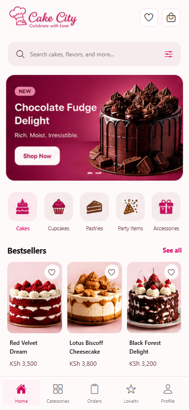
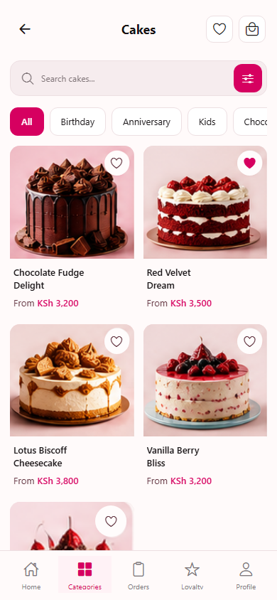
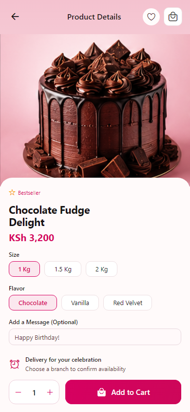
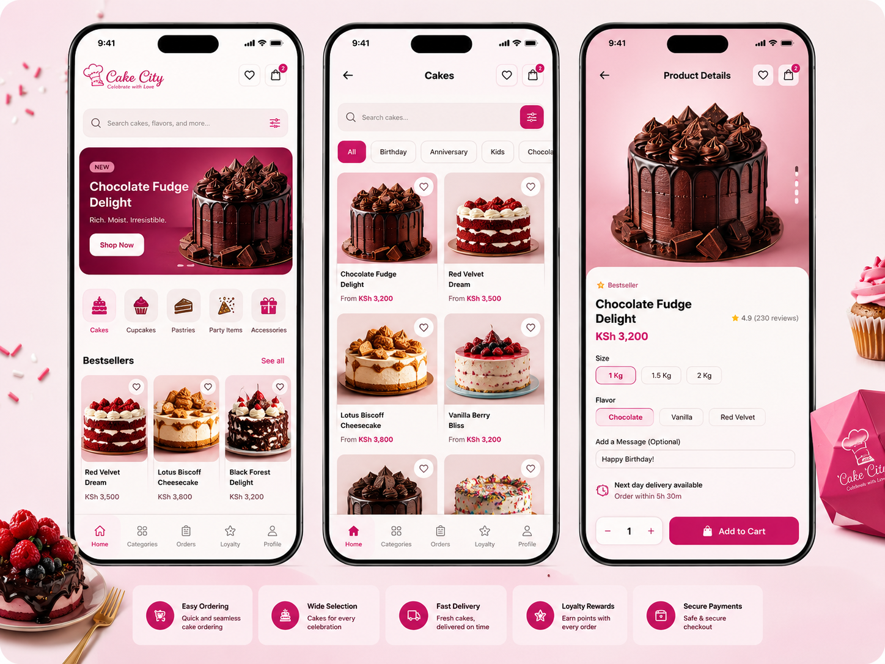

Cake City app UI
Actual Expo screens at 390 pixels, using the owner's supplied cake content and artwork. The saved heart on the Cakes screen reflects the favourites interaction test.



These are mobile browser captures. Native installation and checkout are not verified. The reference products need matching live catalogue listings before ordering. Cart counts, reviews and delivery availability use real state.
Supplied reference
